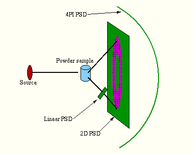
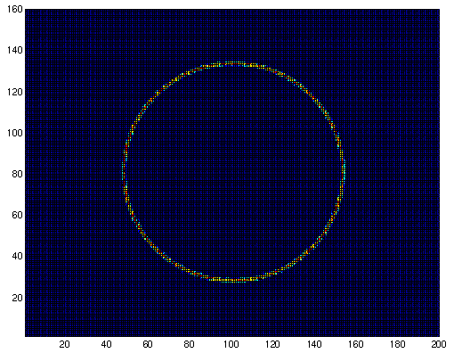
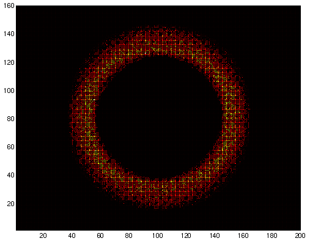
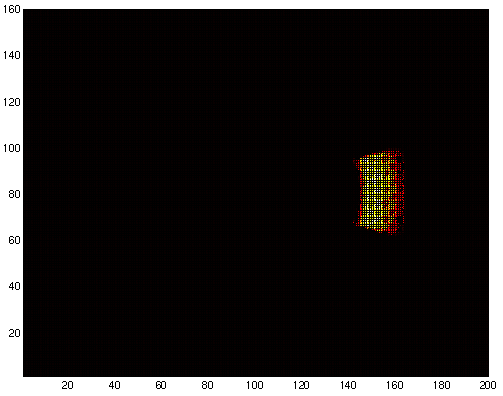
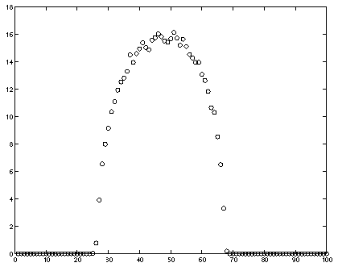
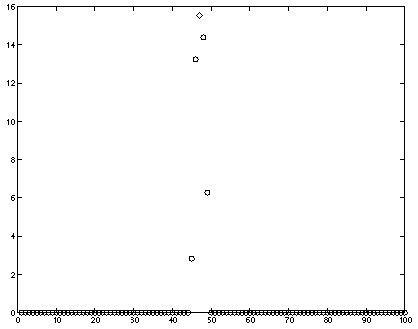
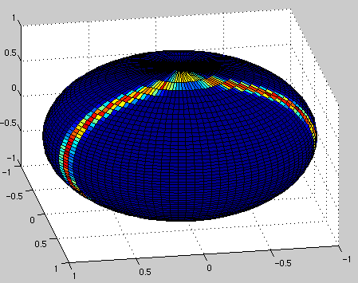

Powder1 powder
sample component. The instrument setup consists of the
source aimed at a
powder sample. The Debye-Scherrer cone is
detected with a big
2D PSD monitor, and a cross-section
of the cone is measured with a linear PSD. Finally, a
4PI PSD monitor is thrown in
for good measure.

See also the source code for the instrument definition.This plot shows the Debye-Scherrer cone projected onto the big PSD. The plot was obtained from a small sample with height and diameter of 1cm.

This plot shows the Debye-Scherrer cone from a large sample (height and diameter of 10cm) placed in a wide beam. The ring appears stretched out at the outside. This is an artifact of the difference in incident angle of the neutrons on the PSD active surface (the PSD surface is not perpendicular to the neutrons).

This plot shows the source in the focusing mode, where only a part of the cone is emitted to avoid spending computation time on useless neutrons.

This is a plot of the small linear PSD using the large (10cm) sample, and shows a cross-section of the Debye-Scherrer cone (the small PSD is perpendicular to the detected neutrons, so the stretching effect of the big PSD does not appear here).

This is a plot of the small PSD using the thin (1cm) sample.

This is a plot of the 4PI PSD using the thick (10cm) sample, showing part of the Debye-Scherrer cone projected onto the spherical detector surface.
